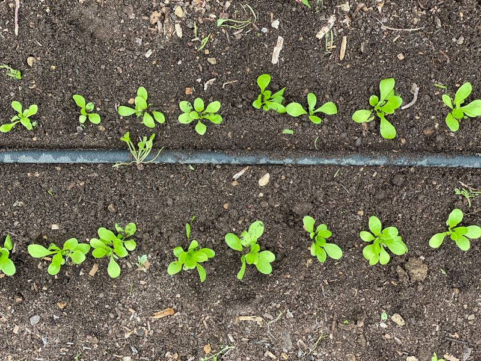
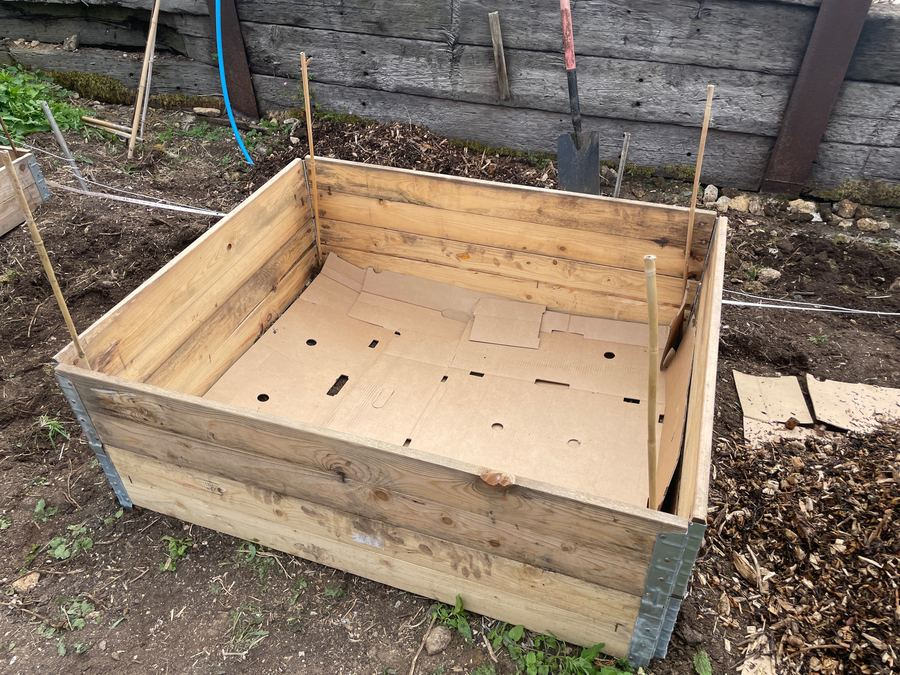
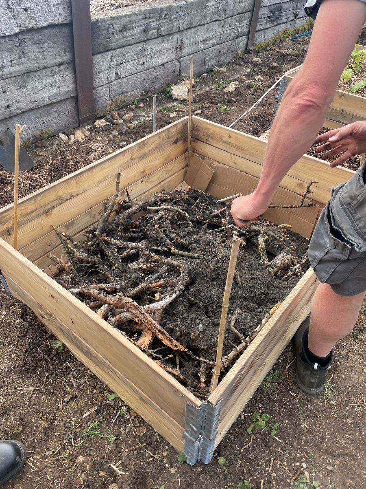
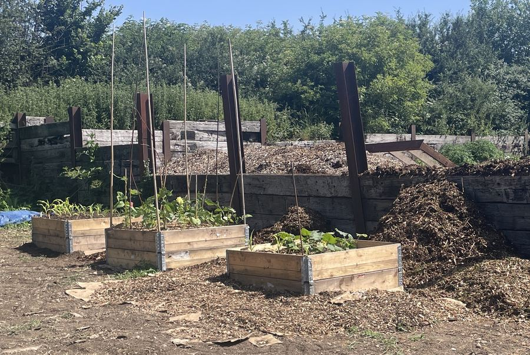
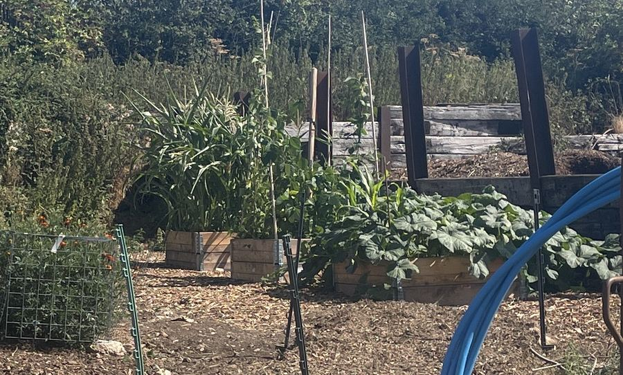
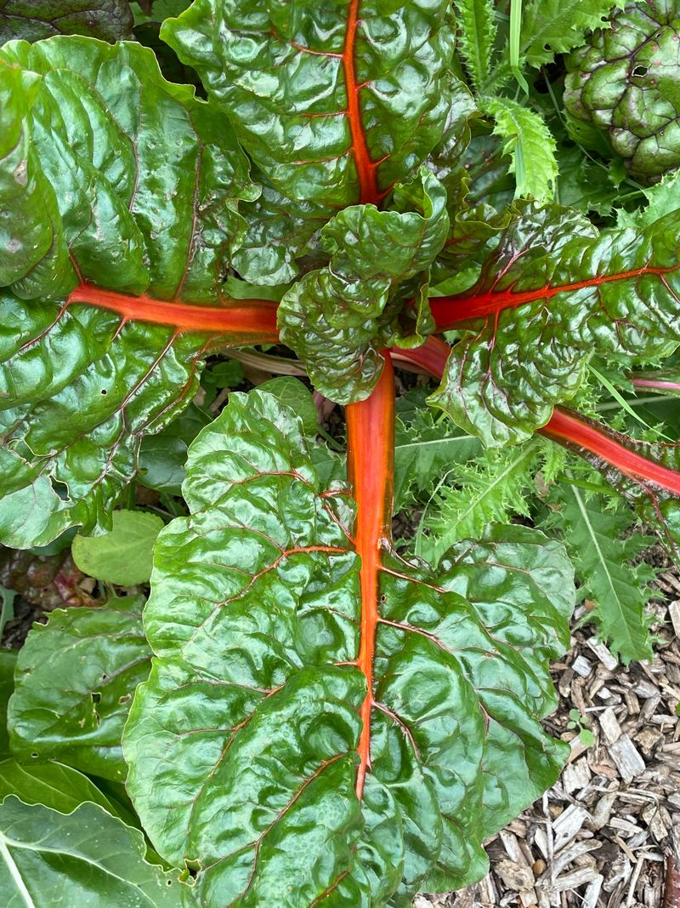
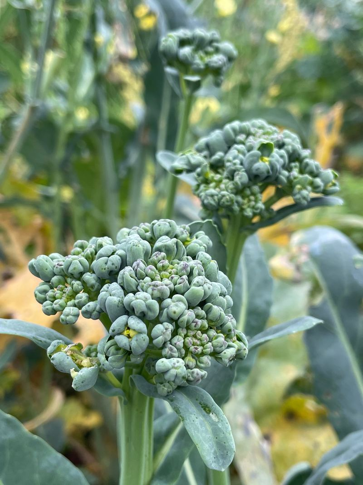
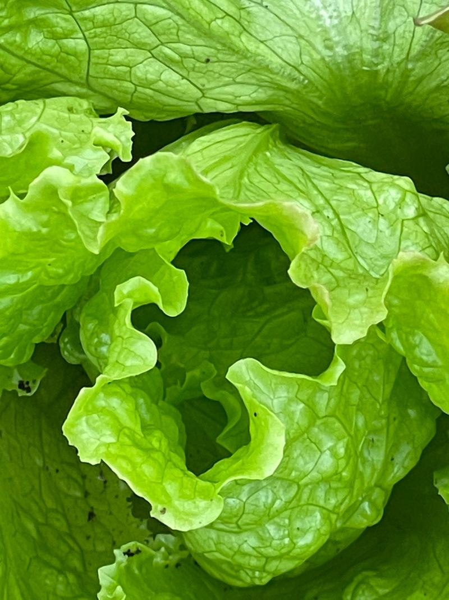
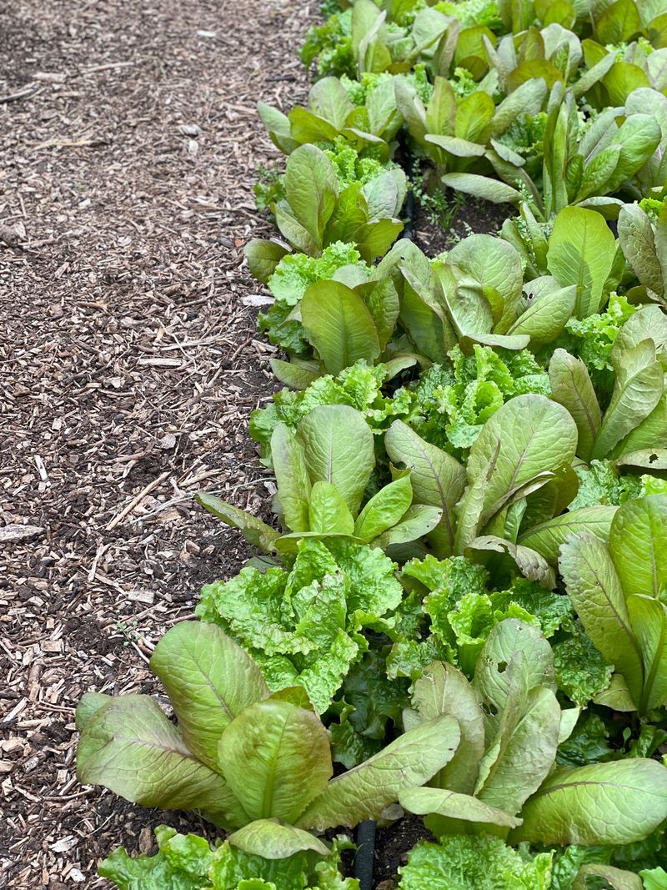
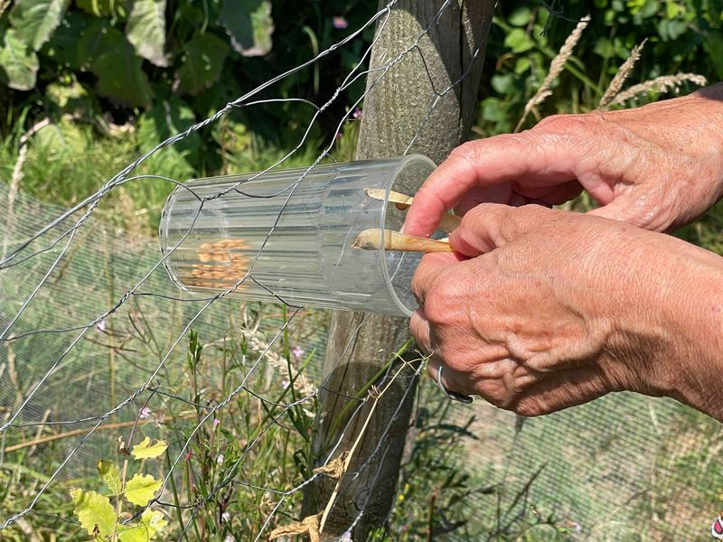

What it is
Why growing together helps
Green social prescribing connects people to nature-based activities, such as community gardening and growing food, to support their health and wellbeing. Health professionals, social prescribing link workers and community groups can all help people find a place to start.
It is practical and friendly and it gets people outdoors with others.

The evidence
What the research says
Gardening and wellbeing
A review of 22 studies found that gardening was linked to lower depression and anxiety and to higher life satisfaction, quality of life and sense of community (Soga, Gaston and Yamaura, 2017).
Soil and serotonin
In laboratory studies a harmless soil bacterium, Mycobacterium vaccae, activated serotonin-producing neurons in the brains of mice and produced effects similar to antidepressants (Lowry and colleagues, 2007). The lead researcher said the findings leave us wondering whether we should all spend more time playing in the dirt, but whether soil microbes can lift mood in people still needs to be tested.
References. Soga M, Gaston KJ and Yamaura Y (2017) Gardening is beneficial for health: a meta-analysis. Preventive Medicine Reports 5, 92–99. Read the paper. Lowry CA and colleagues (2007) Identification of an immune-responsive mesolimbocortical serotonergic system: potential role in regulation of emotional behavior. Neuroscience, doi:10.1016/j.neuroscience.2007.01.067. Read the paper or the full text. University of Bristol press release (2 April 2007) Getting dirty may lift your mood.
Who can benefit
Growing is for everyone
Many people find community growing helps when they feel:
Lonely or isolated
A regular, welcoming place to be, with people to chat to and jobs to share.
Low in mood or anxious
Time outdoors with simple, absorbing tasks and no pressure to perform.
New to the area or retired
A way to meet neighbours and feel part of something.
Curious about growing
Learn to grow your own food alongside people who've done it before.
How we can help
Support to get you started
Volunteer support
Willing hands to help get a scheme up and running.
Free advice
Practical guidance on turning a small patch of land into a growing space.
Site visits and workshops
We'll come and look at your site and run a session with your group.
Fundraising help
Guidance on finding funding to set up a community garden or green social prescribing project.
Citizen science
Add soil testing and biodiversity counts, so a community garden also gathers real data.
Training
For people who want to set up and run a project or community garden.
See it grow
From an empty bed to a harvest








Our experience
Experience you can draw on
Our work in community growing and green social prescribing goes back to 2016. What we offer comes from real projects:
- Develoment of a community garden at a local hospital to support a green social prescribing initiative
- Support for a community agriculture farm
- Guidance and training for students who are NEET (not in education, employment or training) or have special educational needs and disabilities (SEND) and work experience placements.
- Regular weekly support for green social prescribing projects at two commercial farms
We are keen to visit other community farms to see what works and share what we learn.

We believe in sharing knowledge, skills and resources. Saving seeds, protecting biodiversity and building community resilience are at the heart of everything we do.
Do you have a patch of land?
Let's grow something together
Do you have a small area at a surgery, hall, church, school or care home that could be given over to growing? Tell us about it and we'll talk it through, with no obligation.
Start a conversationcheryl@iamtheuniverse.earth